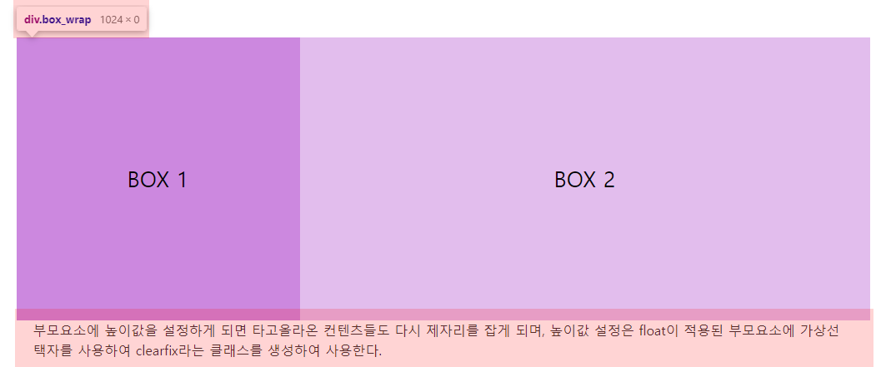

1주차 Layout Step 1
👋STEP 1 레이아웃 예시👋
height 고정
height 고정
-
1. inline-block
속성 설명 예제에서 사용된 속성 브라우저 서포트 inline-block inline과 block의 특성을 모두 지니고 있는 inlne-block은 inline 요소처럼 컨텐츠 만큼의 크기를 차지하여 나란히 배치되거나 block 요소처럼 사용가능한 전체 너비를 차지하며 한 줄 전체의 영역에 배치된다. - display: inline-block
다음을 제외하고 전체적으로 모든 브라우저에서 지원 가능하다.
- FIrefox(ver.2) partial support with prefix (-moz-)
- IE(ver.6-7) partial support 지원브라우저 보러가기BOX 1BOX 2부모요소의 너비값 1024px에 맞추어 box 1과 box 2에 각각 340px, 684px 을 주었으나 box 2가 다음 줄로 밀려났다. 정확한 값을 주었는데 박스가 밀려나는 이유는, inline-block자체에 고유의 여백값을 가지고 있으므로 부모요소에 font-size: 0으로 재정의 하여 빈여백이 생기지 않도록 한다.
BOX 1BOX 2 -
2. table
속성 설명 예제에서 사용된 속성 브라우저 서포트 table display: table 속성은 다수의 아이템을 일정하게 정렬하려고 할 때 많이사용되는 방법으로 요소에 table의 성질을 갖게한다.
- [부모요소] diplay: table 로 선언함과 동시에 너비를 잡아주고
- [자식요소] display: table-cell을 선언하여 table의 td 요소처럼 작동하게 한다.- display: table
- display: table-cell
다음을 제외하고 전체적으로 모든 브라우저에서 지원 가능하다.
FIrefox(ver.2) partial support
IE(ver.6-7) not supported 지원브라우저 보러가기BOX 1BOX 2 -
3. position
속성 설명 예제에서 사용된 속성 브라우저 서포트 position position 속성은 HTML 요소가 위치를 결정하는 다음의 4가지 방식을 설정한다.
- static position(정적위치) : HTML요소의 위치를 결정하는 가장 기본적인 방식으로 top, right, bottom, left 속성값에 영향을 받지 않음. 단순히 웹 페이지의 흐름에 따라 차례대로 요소들을 위치시킨다
- relative position(상대위치) : HTML요소의 기본 위치 기준으로 위치 설정
- fixed position(고정위치) : 뷰포트(viewport)를 기준으로 위치를 설정
- absolute position(절대위치) : 고정위치가 뷰포트를 기준으로 위치를 결정하는 것과 비슷하게 동작하나, 단지 뷰포트(viewport)를 기준으로 하는 것이 아닌 위치가 설정된 부모요소를 기준으로 위치를 설정- position: relative
- position: absolute
- left: 0
- right: 0
다음을 제외하고 전체적으로 모든 브라우저에서 지원 가능하다.
- Opera Mobile(ver.12-12.1) not supported
지원브라우저 보러가기BOX 1BOX 2position으로 box1, box2를 띄워 배치하게 되면 부모요소의 높이값이 사라지게 된다. 사라진 높이 때문에 box 다음으로 배치되어 있던 레이아웃들이 타고 올라오는 현상이 생기게 되는데 이때 부모요소에 높이값을 주면 해당 현상은 해결된다.
-
4. flex
속성 설명 예제에서 사용된 속성 브라우저 서포트 flex flexible box는 flex box라고도 불리며, CSS3에서 처음 소개된 레이아웃 모델로써 서로 다른 크기의 화면과 기기에서도 HTML 요소들이 자동으로 재정렬되어, 웹 페이지의 레이아웃을 언제나 똑같이 유지할 수 있도록 함
- flex box를 위해 제공되는 속성은 display, flex-direction, justify-content, align-items, flex-wrap, flex-flow, align-content
- flex item을 위해 제공되는 속성은 order, align-self, flex- display: flex
- flex-basis■ display: flex 대부분의 공식 최신브라우저에서 호환되고 있으나 IE(ver.10 / 11)에서는 부분적으로 지원 가능하다.
- IE(ver.11) partial support
- IE(ver.10) partial support with prefix (-ms-)
지원브라우저 보러가기 ■ flex-basis 대부분의 공식 최신브라우저에서 호환되고 있으나 IE11 미만(ver.6-10)에서는 지원되지 않는다.
- IE(ver.6-10) not supported
지원브라우저 보러가기BOX 1BOX 2정렬하려는 컨텐츠들의 부모요소에게 display: flex 를 적용하고 자식 요소에 flex-basis로 박스의 너비값을 준다
-
5. grid
속성 설명 예제에서 사용된 속성 브라우저 서포트 grid grid는 2차원(행과 열)의 레이아웃 시스템을 제공 함. flexible box는 1차원 레이아웃을 위한 속성이지만 grid는 좀 더 복잡한 레이아웃을 위해 사용 가능.
flex와 마찬가지로 아이템을 감싸는 부모요소(컨테이너) 안에서 아이템을 배치 할 수 있다.
MDN WEB DOCS 보러가기 HEROPY Tech의 css grid 완벽가이드- display: grid
- grid-template
대부분의 공식 최신브라우저에서 호환되고 있으나 그 이하 버전에서는 부분적 지원이나 지원 불가의 경우도 많으므로 사전에 호환여부를 파악해야 함 웹 IE(ver.10 / 11)에서는 부분적으로 지원 가능하며 모바일 Opera Mini는 지원불가
■ display: grid
- IE(ver.11) partial support with prefix (-ms-)
- IE(ver.10) partial support with prefix (-ms-)
- Opera Mini not support
- Opera Mobile(ver.12-12.1) not support
- Android Browser(ver.2.1-4.4.4) not support
■ grid-template
- IE(ver.6-10) not support
- IE(ver.11) not support
지원브라우저 보러가기BOX 1BOX 2 -
6. float
속성 설명 예제에서 사용된 속성 브라우저 서포트 float flexible box는 flex box라고도 불리며, CSS3에서 처음 소개된 레이아웃 모델로써 서로 다른 크기의 화면과 기기에서도 HTML 요소들이 자동으로 재정렬되어, 웹 페이지의 레이아웃을 언제나 똑같이 유지할 수 있도록 함
- flex box를 위해 제공되는 속성은 display, flex-direction, justify-content, align-items, flex-wrap, flex-flow, align-content
- flex item을 위해 제공되는 속성은 order, align-self, flex- float: left
- clear: both
다음의 경우를 제외하고 대부분의 공식 최신브라우저에서 호환되고 있다
- Android Browser(ver.2.1-4.3) not support
지원브라우저 보러가기box 1, box 2에 flaot을 적용하게 되면 부모요소안에서 나란히 배치되는 모습을 볼 수 있다. 그러나 박스 다음으로 위치한 컨텐츠들이 타고 올라와버리는 현상이 생기는데 이것은 컨텐츠 흐름에 따라 배치되는 float요소의 속성 때문이다. float은 뜻 그래도 띄운다라는 의미처럼 부모요소위에 붕 떠있는 형태를 취하게되므로 부모요소의 높이값은 사라지게된다.
BOX 1BOX 2따라서 부모요소에 높이값을 설정하게 되면 타고올라온 컨텐츠들도 다시 제자리를 잡게 되며, 높이값 설정은 float이 적용된 부모요소에 가상선택자를 사용하여 clear 속성을 사용한다.
.clearfix::after{display:block;clear: both;content:"";}